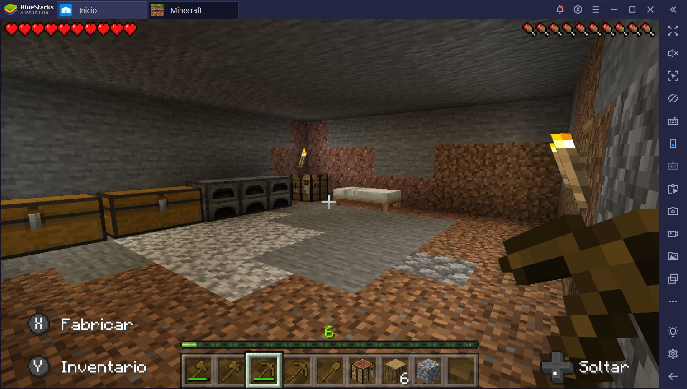

Modo Supervivencia
El modo supervivencia es la experiencia clásica de Minecraft. A diferencia del modo creativo, aquí tienes barras de vida (corazones) y hambre (muslitos), lo que te obliga a recolectar recursos, fabricar herramientas y buscar comida para mantenerte a salvo de peligros y monstruos.

Modo Creativo
El Modo Creativo es una variante de Minecraft diseñada exclusivamente para la libertad total y la construcción, eliminando cualquier mecánica de supervivencia o dificultad. Es como tener un set de bloques de LEGO infinito donde no tienes que preocuparte por nada más que tu imaginación.

Modo Espectador
El Modo Espectador es una modalidad de juego en la que eres un "fantasma" dentro del mundo de Minecraft.
Te permite observar todo lo que ocurre sin poder interactuar ni ser visto.